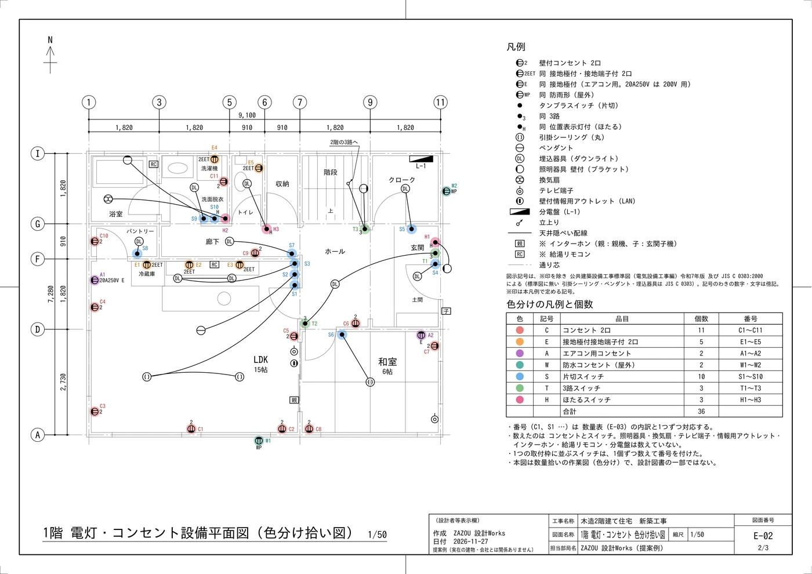
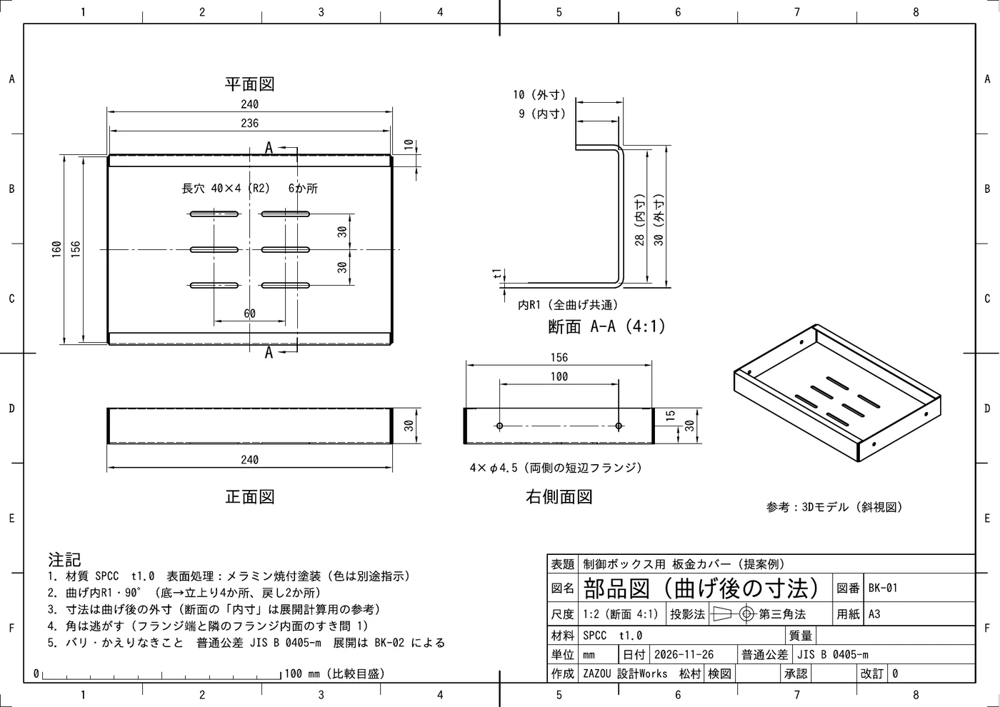
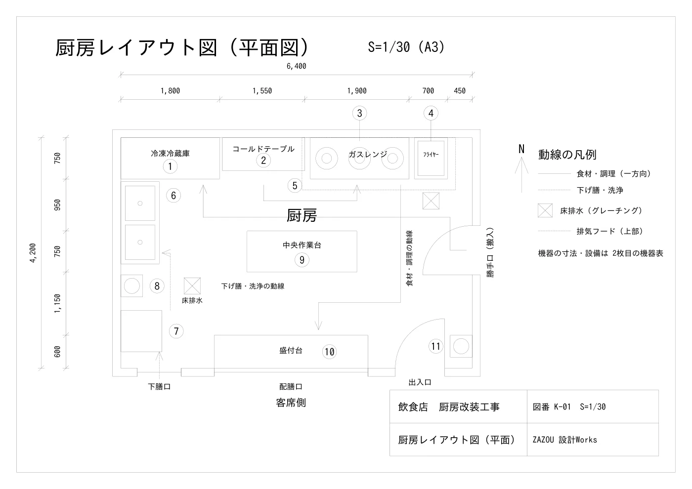
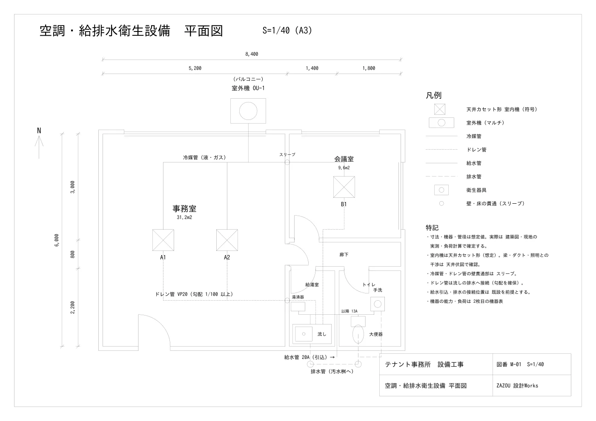

電気配線図・色分け図面提案例
木造2階建て住宅の1階、電灯・コンセント平面図（1/50）。数えた記号に品目ごとの色の印と番号を付けた色分け図面と、数量表・部材表をまとめています。
PDFを開く（A3・3枚）SyncDraft は、ZAZOU が図面の仕事で使っている作図システムです。部品や部屋の寸法を数値の表で持ち、その表から2D図面（DXF・PDF）と3D（STEP・STL）を出します。このページでは、SyncDraftでできることと、SyncDraftで作った見本図面をご紹介します。
図面を作るときに私たちが使っている道具です。
どれも SyncDraft で作った提案例です。寸法・数量は提案例の値で、実在の建物・会社とは関係ありません。図を押すとPDFが開きます。

木造2階建て住宅の1階、電灯・コンセント平面図（1/50）。数えた記号に品目ごとの色の印と番号を付けた色分け図面と、数量表・部材表をまとめています。
PDFを開く（A3・3枚）
同じ部品を、数値表の値だけ変えて作り直した例です。版Aは長さ100・板厚6、版Bは長さ140・板厚9など。図面の数値表で、版Bで変えた値に「＊」が付いています。

